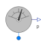

PressureIdeal pressure sensor |

|
Information
This information is part of the Modelica Standard Library maintained by the Modelica Association.
This component monitors the absolute pressure at its fluid port. The sensor is ideal, i.e., it does not influence the fluid.
Connectors (2)
| port |
Type: FluidPort_a |
|
|---|---|---|
| p |
Type: RealOutput Description: Pressure at port |
Used in Examples (2)
|
Modelica.Fluid.Examples.DrumBoiler Complete drum boiler model, including evaporator and supplementary components |
|
|
Modelica.Fluid.Examples.Tanks Two tanks connected with pipes at different heights |